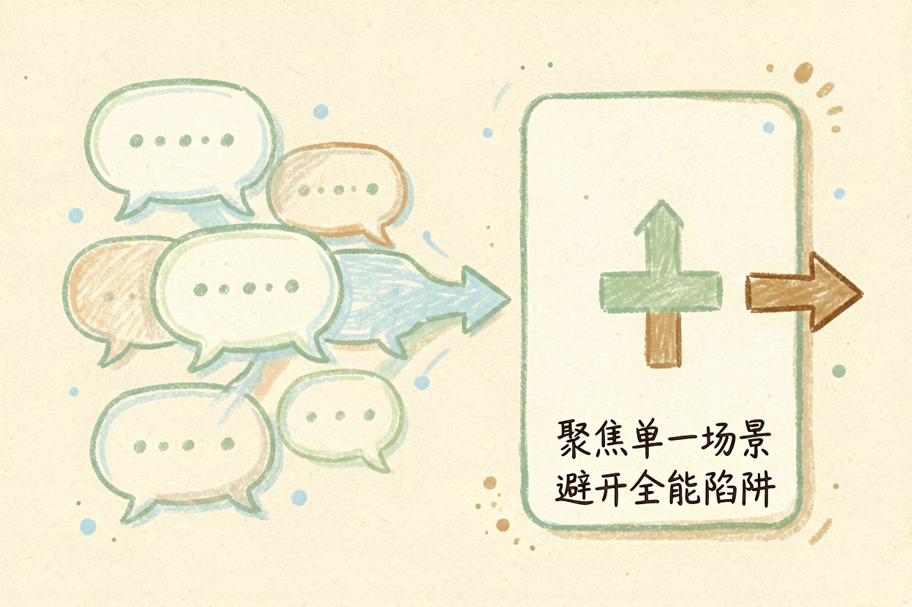
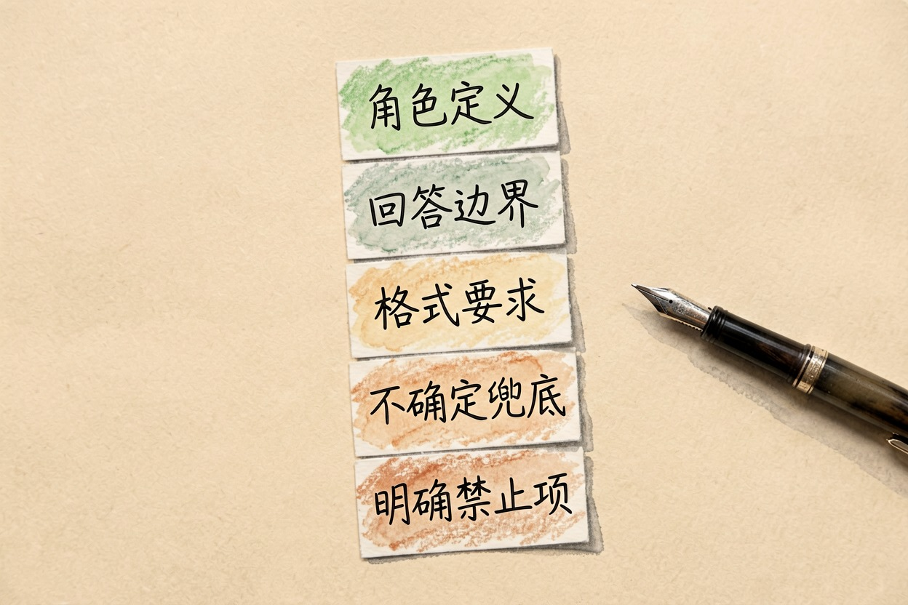
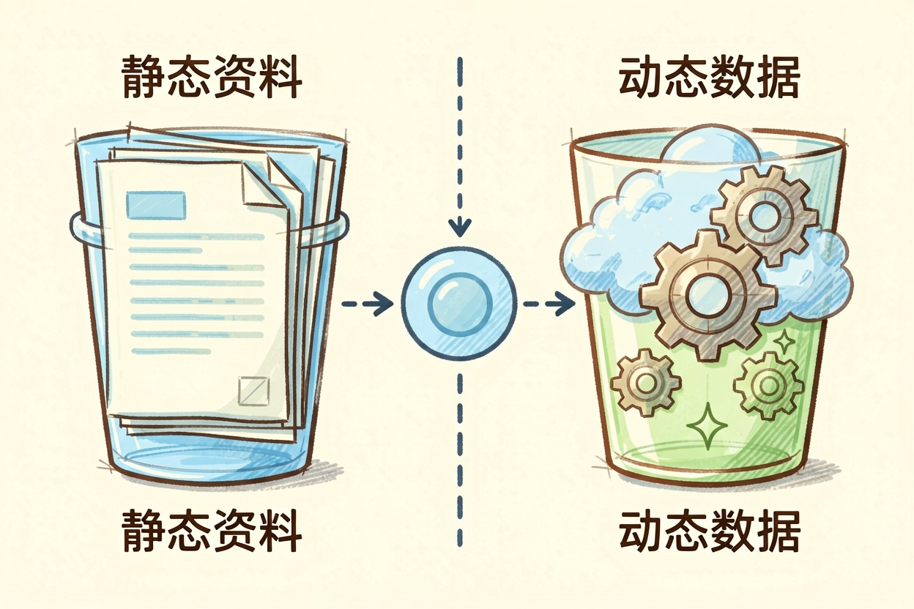
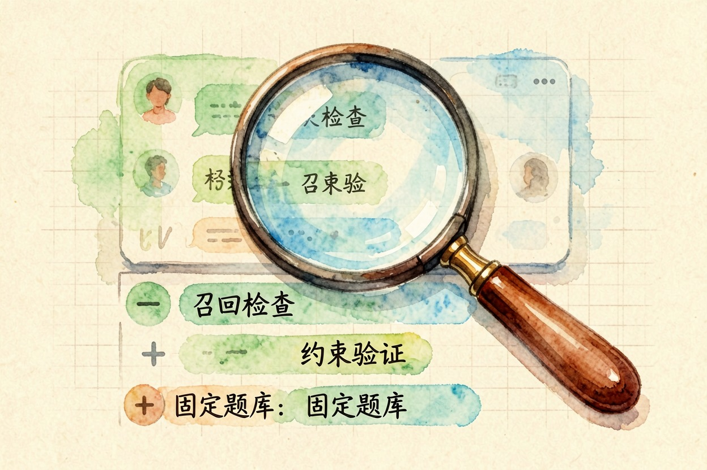
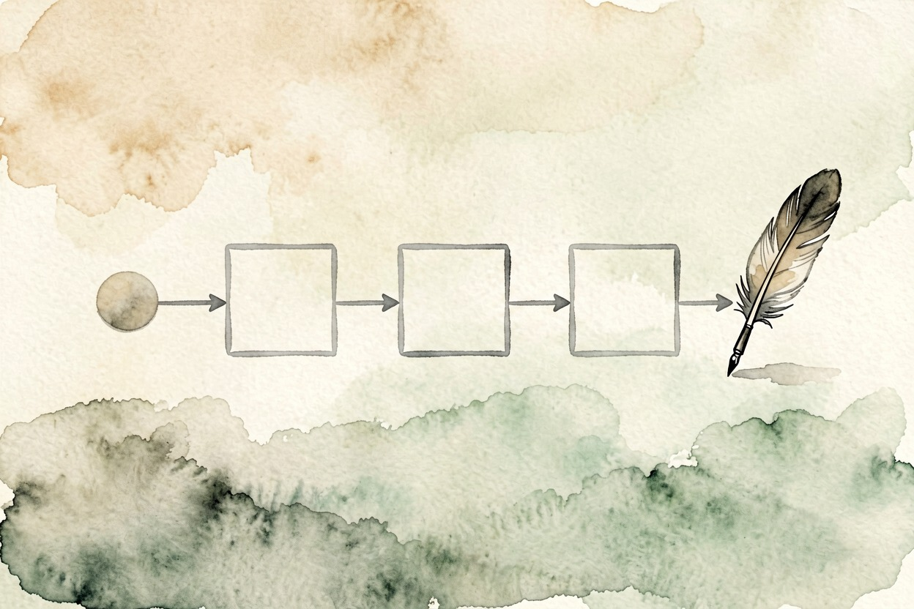

扣子 Coze 怎么用？零基础搭出第一个智能体 — Learntide
上手之前先把目标缩小到一件事。范围越窄，人设越好写，后面调试也能少掉一大半功夫。
扣子coze怎么用：先想清楚它替你干什么

扣子coze怎么用？动手之前先回答一个问题：你要它替谁、在什么场景、接住哪一类重复提问。目标越窄，做出来越好用。
新手最常犯的错，是想做一个什么都会的全能助手。结果人设写得又空又长，回答永远差着半步。
先定一个小目标。比如「答复门店营业时间和退换货规则」，一个下午就能跑通。
第一步：建智能体，人设写成规则

登录后在工作空间里新建智能体，填名字和简介，进入编排页面。左边是人设与回复逻辑，中间是技能区，右边是预览调试。
人设别写形容词，写规则。下面这段可以直接改着用：
角色：某某门店的客服助手
只回答：营业时间、地址、退换货规则、发票问题
回答要求：先给结论，再补一句依据，控制在三句以内
遇到不确定：直接说需要人工确认，不要猜
禁止：承诺赔付金额、透露内部政策原文五行规则，比一段热情洋溢的自我介绍管用得多。规则写清楚，模型跑偏的空间就小。
补两点。一是先写禁止项，比堆允许项更能约束住它；二是把不确定时该说什么固定下来，别留给它临场发挥。
第二步：挂知识库和插件

固定不变的资料放知识库。把规则文档切成小段传上去，一段讲一件事，别把十几页的文件整个丢进去。
要实时变化的信息才用插件，比如搜索、日历、天气。插件负责取数，不负责替你思考，这两件事别混。
两者的取舍其实好判断：内容一年改几次，放知识库；一天变好几回，走插件。
第三块是工作流。coze工作流怎么搭？把「取数据、做判断、生成回复」拉成几个节点连起来就是。回复需要固定格式、或者要分支处理时才值得上，普通问答用不着。
第三步：调试，看它究竟卡在哪

预览区里逐条试问，把真实用户会说的话原样敲进去，包括口语、错别字和只有半句的问题。
答得不对时分三段查：是知识库没召回，还是召回了没用上，或者人设根本没约束住它。运行日志里能看到每一步的输入输出，一段一段看就清楚了。
别只试一遍就当过关。同一个问题换三种问法，答案应该都落在一个意思上，这才叫稳。
改完重跑同一批问题。手上留十条固定测试题，每次都跑一遍，才知道这次改动是变好了还是变差了。
发布之前，这几件事别漏
先确认发布渠道。扣子智能体怎么做才能上到你想要的地方，取决于该渠道的要求，有的需要额外资质和审核，提前看清楚再动手。
再确认资料边界。内部价格表、客户名单这类东西，别为了效果好就一股脑传进知识库。
最后留一条人工兜底路径。答不上来时把用户交给真人，比硬编一个答案强得多。
上线头几天记得翻对话记录。用户实际问的和你预设的往往对不上，这批记录就是最好的改进依据。
这几步走完，扣子coze怎么用就不再是问题，剩下的功夫都花在打磨那份人设上。

本文信息核对于 2026-08-08。AI 产品的价格、免费额度与功能变动频繁，实际以各工具官网当前说明为准。